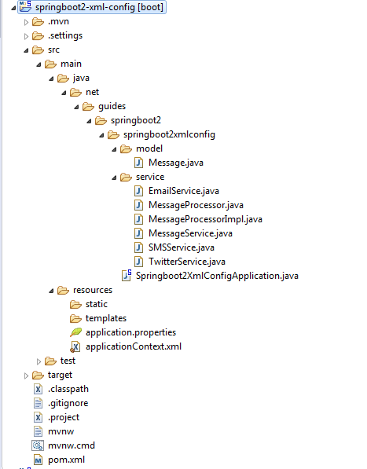

Spring @ImportResource Annotation Example
In this article, we will quickly discuss how to use @ImportResource
annotation with a simple Spring boot application.
This tutorial is upgraded to Spring Boot 3 and Java 17.
Spring provides a @ImportResource annotation that is used to load beans from
an applicationContext.xml file into an Application Context.
annotation that is used to load beans from an applicationContext.xml file
into an Application Context.
@ImportResource({"classpath*:applicationContext.xml"})In this example, we are creating a simple message-processing spring boot application. Here we are sending a
message using different services like SMSService, TwitterService, and EmailService.
We will configure message service beans in an applicationContext.xml file
and we will load beans using @ImportResource annotation as:
@SpringBootApplication
@ImportResource({"classpath*:applicationContext.xml"})
public class Springboot2XmlConfigApplication {
public static void main(String[] args) {
ApplicationContext applicationContext = SpringApplication.run(Springboot2XmlConfigApplication.class, args);
MessageProcessor userService = applicationContext.getBean(MessageProcessor.class);
userService.processMsg("twitter message sending ");
}
}
While there are multiple ways of doing this, the recommended way is to create a separate configuration class to load this XML bean definition file.
@Configuration
@ImportResource({"classpath*:applicationContext.xml"})
public class XmlConfiguration {
}
The key part of the definition is @ImportResource({" classpath*:applicationContext.xml"}).
The applicationContext.xml will be imported from the classpath.
Let's create a complete simple spring boot example to demonstrate how to set up an XML-based configuration.
Create and Import the Spring Boot application
Let's quickly create a Spring Boot application using Spring Initializr at http://start.spring.io/, which is an online Spring Boot application generator.
The pom.xml File
<?xml version="1.0" encoding="UTF-8"?>
<project xmlns="http://maven.apache.org/POM/4.0.0" xmlns:xsi="http://www.w3.org/2001/XMLSchema-instance"
xsi:schemaLocation="http://maven.apache.org/POM/4.0.0 http://maven.apache.org/xsd/maven-4.0.0.xsd">
<modelVersion>4.0.0</modelVersion>
<groupId>net.guides.springboot2</groupId>
<artifactId>springboot2-xml-config</artifactId>
<version>0.0.1-SNAPSHOT</version>
<packaging>jar</packaging>
<name>springboot2-xml-config</name>
<description>Demo project for Spring Boot</description>
<parent>
<groupId>org.springframework.boot</groupId>
<artifactId>spring-boot-starter-parent</artifactId>
<version>3.0.4</version>
<relativePath/> <!-- lookup parent from repository -->
</parent>
<properties>
<project.build.sourceEncoding>UTF-8</project.build.sourceEncoding>
<project.reporting.outputEncoding>UTF-8</project.reporting.outputEncoding>
<java.version>17</java.version>
</properties>
<dependencies>
<dependency>
<groupId>org.springframework.boot</groupId>
<artifactId>spring-boot-starter-web</artifactId>
</dependency>
<dependency>
<groupId>org.springframework.boot</groupId>
<artifactId>spring-boot-starter-test</artifactId>
<scope>test</scope>
</dependency>
</dependencies>
<build>
<plugins>
<plugin>
<groupId>org.springframework.boot</groupId>
<artifactId>spring-boot-maven-plugin</artifactId>
</plugin>
</plugins>
</build>
</project>
Let's create a Message POJO class with a few service classes for
demonstration. In this example, we are
sending messages using different services like SMSService, TwitterService, and EmailService.
Project Structure
Please refer to the project structure below the diagram.
Message.java
package net.guides.springboot2.springboot2xmlconfig.model;
public class Message {
private int id;
private String message;
public Message(int id, String message) {
super();
this.id = id;
this.message = message;
}
}
MessageService.java
package net.guides.springboot2.springboot2xmlconfig.service;
public interface MessageService {
public void sendMsg(String message);
}
EmailService.java
package net.guides.springboot2.springboot2xmlconfig.service;
public class EmailService implements MessageService{
public void sendMsg(String message) {
System.out.println(message);
}
}
SMSService.java
package net.guides.springboot2.springboot2xmlconfig.service;
public class SMSService implements MessageService{
public void sendMsg(String message) {
System.out.println(message);
}
}
TwitterService.java
package net.guides.springboot2.springboot2xmlconfig.service;
public class TwitterService implements MessageService{
public void sendMsg(String message) {
System.out.println(message);
}
}
MessageProcessor.java
package net.guides.springboot2.springboot2xmlconfig.service;
public interface MessageProcessor {
public void processMsg(String message);
}
MessageProcessorImpl.java
package net.guides.springboot2.springboot2xmlconfig.service;
public class MessageProcessorImpl implements MessageProcessor {
private MessageService messageService;
public void setMessageService(MessageService messageService) {
this.messageService = messageService;
}
public void processMsg(String message) {
messageService.sendMsg(message);
}
}
The applicationContext.xml File
Let's create and configure Spring beans in the applicationContext.xml file.
<?xml version="1.0" encoding="UTF-8"?>
<beans xmlns="http://www.springframework.org/schema/beans"
xmlns:xsi="http://www.w3.org/2001/XMLSchema-instance"
xmlns:context="http://www.springframework.org/schema/context"
xsi:schemaLocation="http://www.springframework.org/schema/beans
http://www.springframework.org/schema/beans/spring-beans.xsd
http://www.springframework.org/schema/context
http://www.springframework.org/schema/context/spring-context.xsd">
<!-- <context:component-scan base-package="com.in28minutes.spring.basics"/> -->
<bean id="emailService"
class="net.guides.springboot2.springboot2xmlconfig.service.EmailService" />
<bean id="sMSService"
class="net.guides.springboot2.springboot2xmlconfig.service.SMSService" />
<bean id="twitterService"
class="net.guides.springboot2.springboot2xmlconfig.service.TwitterService" />
<bean id="messageProcessor"
class="net.guides.springboot2.springboot2xmlconfig.service.MessageProcessorImpl">
<property name="messageService" ref="twitterService"></property>
</bean>
</beans>
Running Application
This spring boot application has an entry point Java class called Springboot2XmlConfigApplication.java with
the public static void main(String[] args) method, which you can run to start the application.
package net.guides.springboot2.springboot2xmlconfig;
import org.springframework.boot.SpringApplication;
import org.springframework.boot.autoconfigure.SpringBootApplication;
import org.springframework.context.ApplicationContext;
import org.springframework.context.annotation.ImportResource;
import net.guides.springboot2.springboot2xmlconfig.service.MessageProcessor;
@SpringBootApplication
@ImportResource({"classpath*:applicationContext.xml"})
public class Springboot2XmlConfigApplication {
public static void main(String[] args) {
ApplicationContext applicationContext = SpringApplication.run(Springboot2XmlConfigApplication.class, args);
MessageProcessor userService = applicationContext.getBean(MessageProcessor.class);
userService.processMsg("twitter message sending ");
}
}
Output
.PNG)